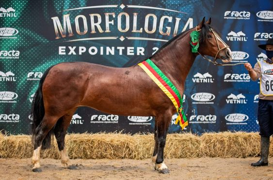
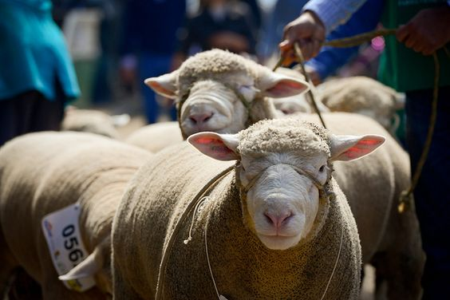

Sobre o tema e Squad
A 44ª Expointer Localizada no Parque de Exposições Assis Brasil em Esteio, em frente a Br-116. Será o primeiro grande evento que acontecerá no Rio Grande do Sul durante a pandemia, o evento acontecerá de 4 a 12 de setembro. As atrações que teremos entre esses dias serão diversas como show musicais, leilões, julgamentos, provas e exposições de animais.
A Expointer é considerada a maior feira de exposição de animais da América Latina. A exposição ocorre sempre no final do mês de Agosto e no início de Setembro,abrangendo dois fins de semana, que são os períodos em que recebe mais visitantes. A primeira edição ocorreu em 24 de fevereiro de 1901, em Porto Alegre. Em 1970 a Expointer é transferida para Esteio e em 2004 a feira recebeu um público recorde de 720 mil pessoas. As atrações que teremos entre esses dias serão diversas como show musicais, leilões, julgamentos, provas e exposições de animais.
 Locações: (0XX) 51 3458.8508 - 51 3458.8500 | E-mail: peeab@agricultura.rs.gov.br Serviço de Exposições e Feiras - Departamento de Defesa Agropecuária (DDA) Fone: (51) 3288.6369 | E-mail: expfeiras@agricultura.rs.gov.br Publicidade e Rádio Expointer E-mail: peeab@agricultura.rs.gov.br / Fone: (51) 3458.8586 Agricultura Familiar Departamento de Agricultura Familiar e Agroindústria (DAFA) - Fone: (51) 3232-6776 Cadastro de Imprensa Secretaria da Agricultura, Pecuária e Desenvolvimento Rural - Assessoria de Comunicação Fone: (51) 3288.6228 | E-mail: cadastro-imprensa@agricultura.rs.gov.br